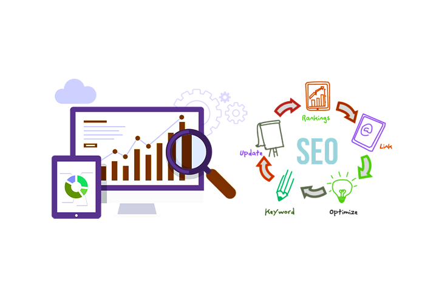

SEO plays a massive part in any business's web optimization efforts, and forms the basis for a business's promotional efforts. Learn about numerous strategies which are employed via any leading search engine optimization firm.
Wish to boost your website above those of the competition? Search engine optimization experts maintain their services may be handy for bringing sites to the peak of the results of search engines. According to these, each site has a particular ranking which brings online users. An extremely new mathematical instrument is utilized by SEO specialists, to make sure that it has a beneficial impact on a website.
Whilst exploring the search engine optimisation services you require, you have to ask the agency or adviser whether link building campaigns are available. When search engines find backlinks for your website from other reputable, verified, higher PR and authoritative sites, these stand for a search for your website. A fantastic search engine optimisation firm has solid connections with a community containing contacts.
Content writers attempt to make great blog posts that could yield prospects for you easily. It may be certain that you receive the best leads whenever you have sites of the highest quality. Would you wish to create a new website from scratch or push online traffic to your existing blog to have the ability to target new clients buying your product type? Leading SEO businesses can earn the very best form of agreements too. You might have high page rankings in as brief a time as possible.

This specific service comprises many site ranking boosting strategies. Search engine optimization solutions are made up of high page ranking plans and link building methods, forming an integral part of digital in addition to online advertising approaches. The perfect search engine optimisation strategies are required to drive visitors and also have an improvement in positions.
With the assistance of the best SEO services, you can be assured of:
Various On-page and Off-page Optimisation providers are possible with the support of these agencies.
This practice is utilized to create a strong presence for companies throughout different social networking sites, including LinkedIn, Facebook, Instagram and Twitter. It may help improve product vulnerability and increase access of brands to clients. Leading marketing agencies will guarantee the most notable growth for businesses, by identifying the ideal keyword phrases, ad testing, and ensuring constant functionality, writing engaging societal advertisements, selecting the most appropriate landing page and a lot more.
This is one of the very important but among the most overlooked SEO providers too. For new sites, you want to consult SEO services Melbourne at the very start of the process when attempting to settle a Shopping Cart application bundle, Content Management System (CMS) etc. Never go for an improper or improper platform, since there might be unpleasant effects on the possible success of your search engine optimisation efforts differently. You have to select the ideal search engine optimization agency too.